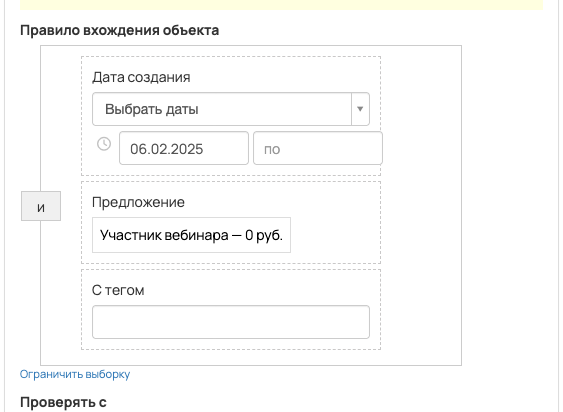
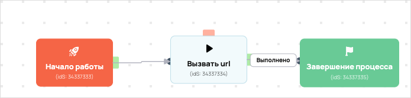

Передача в амо ПШТ4
- ID процесса:
1971204 - Объект: Заказы
- Статус: Ожидание событий
- Внутренняя страница: 1971204. Передача в амо ПШТ4
- GetCourse: Карточка | Схема процесса
Скриншоты процесса


Коротко для заказчика
- Главное: В процесс попадают заказы по правилу: Дата создания (дата: 06.02.2025 - ...) и Предложение (ID: 5300529) и С тегом (ID: 1780392).
- Дальше он передает данные как: Формы и анкеты.
- Связанных баз Vakas: 1.
Понятное описание процесса
- Процесс работает с объектом GetCourse: Заказы. Текущий статус процесса: Ожидание событий.
- На вход попадают данные так: В процесс попадают заказы по правилу: Дата создания (дата: 06.02.2025 - ...) и Предложение (ID: 5300529) и С тегом (ID: 1780392).
- Дополнительные условия внутри схемы не извлечены: процесс идет напрямую по основной ветке или условия не подписаны.
- Дальше процесс делает прямые вызовы Vakas: 1. Напрямую задействованы базы: 70951.
- Передача: 70951. Передача в амо ПШТ4: Формы и анкеты. Передаются параметры:
name,email,phone,getcourse_user_id,utm_source,utm_medium,utm_campaign,utm_content,utm_term. - Что происходит в amoCRM: Маршрут в amoCRM нужно проверить вручную.
Ход процесса в GetCourse
- Схема состоит из 5 блоков и 7 переходов.
- По типам: стартов 1, условий/ожиданий 0, вызовов URL 3, изменений полей 0, финалов 1.
Блоки процесса: что делают и зачем нужны:
- Блок
34337333«Начало работы» (старт). Что делает: Запускает выполнение схемы для объекта, который попал под правило входа процесса. Зачем нужен: Нужен как точка входа: от него GetCourse начинает движение объекта по схеме. Дальше: если результат «Выполнено», идет в «Вызвать url». - Блок
34337334«Вызвать url» (вызов URL). Что делает: Передает в Vakas: 70951. Передача в амо ПШТ4, канал «Формы и анкеты» (GET); параметры:name,email,phone,getcourse_user_id,utm_source,utm_medium,utm_campaign,utm_content,utm_term; timeout 300 сек. Зачем нужен: Нужен, чтобы передать подходящий объект в 70951. Передача в амо ПШТ4; дальше Маршрут в amoCRM нужно проверить вручную. Дальше: если результат «Ошибка», идет в «n8n fail после Вызвать url #34337334»; если результат «Выполнено», идет в «n8n success после Вызвать url #34337334». - Блок
43523681«n8n success после Вызвать url #34337334» (вызов URL). Что делает: Вызывает внешний URL: testn8n.easydrafting.ru/webhook/gc-vakas-retry-events (POST); параметры:event,clientED,gcDomain,action,process_id,process_name,entity_type,object_id,order_id,user_id,name,email,phone,error_message; timeout 10 сек. Зачем нужен: Нужен, чтобы процесс GetCourse передал данные во внешний сервис testn8n.easydrafting.ru. Дальше: если результат «Ошибка», идет в «Завершение процесса»; если результат «Выполнено», идет в «Завершение процесса». - Блок
34337335«Завершение процесса» (завершение). Что делает: Завершает ветку процесса после выполненных проверок и действий. Зачем нужен: Нужен, чтобы закрыть текущую ветку и не гонять объект по процессу повторно. Дальше переходов нет: это конечная точка ветки. - Блок
43523682«n8n fail после Вызвать url #34337334» (вызов URL). Что делает: Вызывает внешний URL: testn8n.easydrafting.ru/webhook/gc-vakas-retry-events (POST); параметры:event,clientED,gcDomain,action,process_id,process_name,entity_type,object_id,order_id,user_id,name,email,phone,error_message; timeout 10 сек. Зачем нужен: Нужен, чтобы процесс GetCourse передал данные во внешний сервис testn8n.easydrafting.ru. Дальше: если результат «Ошибка», идет в «Начало работы»; если результат «Выполнено», идет в «Начало работы».
Что именно входит в процесс
- В процесс попадают заказы по правилу: Дата создания (дата: 06.02.2025 - ...) и Предложение (ID: 5300529) и С тегом (ID: 1780392).
Как именно настроено правило
- По правилу также учитываются ограничения: «дата создания: с 06.02.2025».
Куда и как передается дальше
| База Vakas | Что передается | Этап в amoCRM | Что происходит со сделкой |
|---|---|---|---|
| 70951. Передача в амо ПШТ4 | Формы и анкеты | не найдено в дампе | Маршрут в amoCRM нужно проверить вручную. |